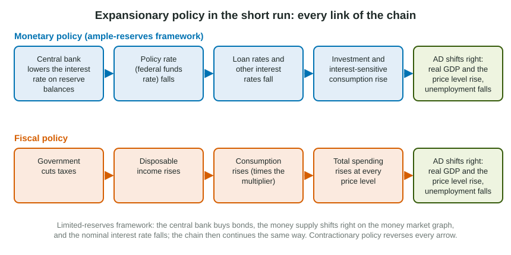

Unit 3 showed how fiscal policy shifts aggregate demand, and Unit 4 showed how a central bank moves interest rates. This topic puts them side by side and asks the question every long free-response item asks in some form: what happens, link by link, when policy acts in the short run? The short run is the period when nominal wages and many prices are slow to adjust, so a shift in AD changes real output and unemployment as well as the price level.
Which way to push
Start by finding the gap. If AD crosses SRAS to the left of LRAS, real GDP is below full-employment output: a recessionary gap, with unemployment above the natural rate. The fix is expansionary policy, which shifts AD right. If AD crosses SRAS to the right of LRAS, output is above full employment: an inflationary gap. The fix is contractionary policy, which shifts AD left.
| Expansionary (recessionary gap) | Contractionary (inflationary gap) | |
|---|---|---|
| Fiscal policy | Raise government spending or transfers; cut taxes | Cut government spending or transfers; raise taxes |
| Monetary policy, ample reserves | Lower the administered rates (interest on reserve balances); the policy rate falls | Raise the administered rates; the policy rate rises |
| Monetary policy, limited reserves | Buy bonds, lower the discount rate or the reserve requirement; the money supply rises | Sell bonds, raise the discount rate or the reserve requirement; the money supply falls |
| Short-run result | Real GDP and the price level rise; unemployment falls | Real GDP and the price level fall; unemployment rises |
The chain, every link

A reader awards an "explain" point only for the causal link, so write each step. For monetary policy in the ample-reserves framework: the central bank lowers the interest rate it pays on reserve balances, so the policy rate (the federal funds rate in the United States) falls; loan rates and other interest rates follow it down; borrowing is cheaper, so firms invest more and households buy more cars and houses; that spending shifts AD right; real GDP and the price level rise, and unemployment falls. In the limited-reserves framework the first links change: the central bank buys bonds, the money supply shifts right on the money market graph and the nominal interest rate falls. From there the chain is the same.
For fiscal policy, a rise in government spending adds to AD directly, and the multiplier makes the total shift larger. A tax cut works one step further back: disposable income rises, households spend part of it (the MPC), so consumption rises and AD shifts right.
Slip to avoid: "The central bank lowers interest rates, so AD rises." That skips the spending link. Lower interest rates raise AD only because investment and interest-sensitive consumption rise.
Closing a gap with fiscal policy
Worked example: the size of the spending change. An economy's real GDP is 1,800 billion dollars and full-employment output is 2,000 billion dollars. The MPC is 0.8.
- Find the gap and its direction. Output is 200 billion dollars below full employment: a recessionary gap, so government spending must rise.
- Compute the multiplier. The spending multiplier is .
- Divide the gap by the multiplier. . A rise of 40 billion dollars in government spending, multiplied by 5, shifts AD by the 200 billion dollars needed.
Multiplying the gap by the multiplier (200 x 5 = 1,000) is the most common slip. The multiplier makes each dollar count several times, so you need fewer dollars than the gap, not more.
The policy mix
Fiscal and monetary policy can act at the same time. When both push AD the same way, the AD effect is clear. The interest rate is another matter. Expansionary fiscal policy raises output and prices, so people need more money for transactions; money demand rises and the nominal interest rate rises. Expansionary monetary policy lowers the interest rate. Put them together and the interest rate could rise or fall: its change is indeterminate unless you know the sizes. With ample reserves the policy rate itself follows the administered rates, so read "the interest rate" here as the rates on loans, which feel both pushes.
Worked example: read a policy mix. A legislature cuts taxes while the central bank, with ample reserves, raises its administered rates.
- Each policy on AD. The tax cut shifts AD right; the higher policy rate lowers investment and shifts AD left.
- Each policy on the interest rate. The tax cut raises income and money demand, pushing rates up; the higher administered rate also pushes rates up.
- Combine. The interest rate rises for sure. The effect on AD, real GDP and the price level is indeterminate: it depends on which push is bigger.
Why use policy at all?
An economy left alone does find its way back to full employment: in a recessionary gap, high unemployment slowly pushes nominal wages and input prices down, and SRAS shifts right. That can take a long time, and output and jobs are lost while it happens. Stabilization policy aims to shorten the gap by moving AD instead. Policy also has costs and limits: decisions take time to make and to work, and an estimate of the gap can be wrong. Those trade-offs, and the longer-run effects of policy on inflation, interest rates and growth, are what the rest of Unit 5 is about.